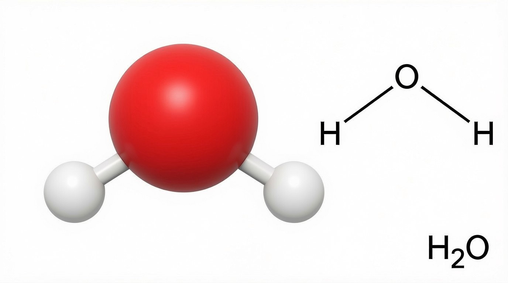
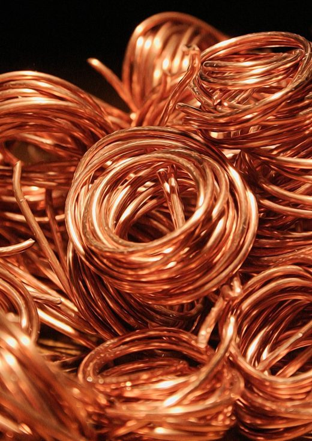
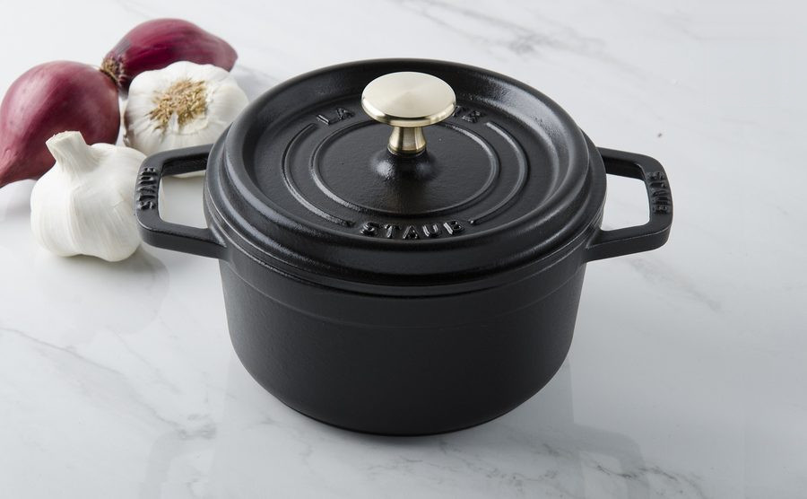
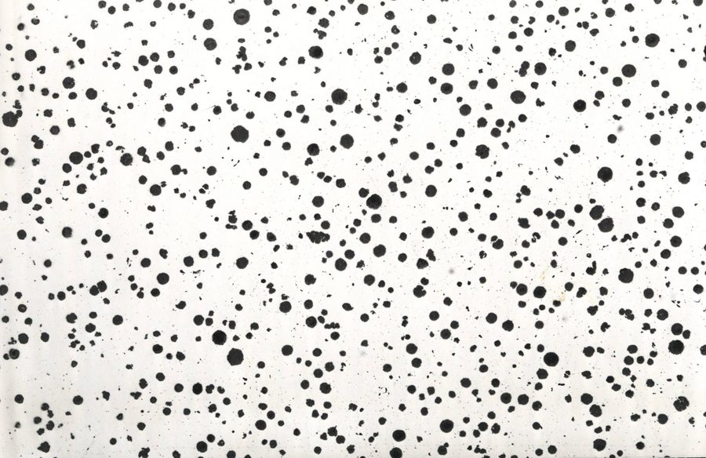

La matière à l'échelle macroscopique
Ce chapitre sera débloqué en fin de séquence, au rythme de la classe. Le code de déblocage est transmis via le cahier de textes — il figure aussi en bas de ta fiche de cours.
Sommaire du chapitre
Physique-Chimie · Seconde générale · Thème 1 — Constitution et transformations de la matière
La matière à l'échelle macroscopique
Thème 1 · Chapitre 1 — cours & exercices corrigés
01 Entités chimiques
La matière est constituée d'entités chimiques, terme générique désignant ses composants microscopiques : atomes, molécules, ions.
- L'atome est une particule neutre d'un élément chimique qui forme la plus petite quantité susceptible de se combiner (ex : C, Na, U…).
- La molécule est un ensemble neutre d'atomes identiques ou non, unis les uns aux autres par le biais de liaisons chimiques (ex : H2O, H2, CH4…).
- Un ion est une entité chimique chargée que l'on trouve en solution. Les ions négatifs sont appelés anions (ex : Cl−, SO42−, F−…) et les ions positifs cations (ex : H+, Mg2+, H3O+…).

Classer ces entités chimiques selon qu'il s'agisse d'un atome, d'une molécule, d'un anion ou d'un cation.
Cu | CU | Ag+ | H | CO2 | O2− | O2 | Ca | NH4+ | NH3 | N | Cu2+ | CO | C | SiO3 | K+
Voir la correction
| Atome | Molécule | Ion | |
|---|---|---|---|
| Anion | Cation | ||
| Cu | H | Ca N | C |
CU | CO2 O2 | NH3 | SiO3 CO |
O2− | Ag+ | Cu2+ NH4+ | K+ |
Attention au piège de l'écriture : Cu (C majuscule, u minuscule) est l'atome de cuivre, tandis que CU (deux majuscules) désigne un assemblage d'un atome de carbone et d'un atome d'uranium — donc une molécule !
02 Corps purs
Une espèce chimique est un ensemble d'entités chimiques.
Un corps pur est constitué d'une seule espèce chimique.
On distingue deux familles de corps purs :
- Les corps purs simples, formés d'un seul type d'élément chimique [Image 2] ;
- Les corps purs composés (ou composés chimiques), formés d'au moins deux types d'éléments chimiques [Image 3].

Classer ces espèces chimiques selon qu'il s'agisse d'un corps pur simple ou composé.
Cu | CU | Ag+ | H | NH4+ | NH3 | N | Cu2+ | CO2 | O2− | O2 | Ca | CO | C | SiO3 | K+
Voir la correction
| Corps pur simple | Corps pur composé |
|---|---|
| Cu | Ag+ | H | N | Cu2+ O2 | O2− | Ca | C | K+ |
CU | CO2 NH4+ | NH3 | SiO3 CO |
03 Mélanges
Un mélange est constitué de plusieurs espèces chimiques.
Il y en a de deux types :
- Les mélanges hétérogènes, constitués de plusieurs phases, c'est-à-dire plusieurs corps que l'on peut distinguer [Image 4] ;
- Les mélanges homogènes, constitués d'une seule phase : les espèces chimiques sont indiscernables [Image 5].
Un mélange de liquides miscibles ne fait apparaître qu'une seule phase, c'est un mélange homogène. À l'inverse, un mélange de liquides non miscibles fait apparaître plusieurs phases, c'est donc un mélange hétérogène.


1 — L'air est-il un mélange ou un corps pur ? Justifier en précisant votre réponse.
2 — Classer chaque espèce chimique composant l'air selon qu'il s'agisse d'un corps pur simple ou composé.
Voir la correction
1 — L'air est un mélange : il est composé de plusieurs espèces chimiques (N2, O2, Ar, etc.).
| Corps pur simple | Corps pur composé |
|---|---|
| N2 | Ar | Ne | He | Kr | H2 O2 | Xe | O3 | Rn |
CO2 |
04 Composition d'un mélange
Lorsqu'on a un mélange, on peut donner par exemple :
- sa composition massique, précisant le pourcentage de la masse de chaque espèce par rapport à la masse totale ;
- sa composition volumique, précisant le pourcentage du volume qu'occupe chaque espèce par rapport au volume total.


1 — Quelle masse de carbone y a-t-il dans une marmite en fonte de 2,5 kg composée à 4 % de carbone ?
2 — Une alliance en or blanc de 5 g est composée de 1000 mg d'or, le reste étant de l'argent. Donner la composition massique de cet alliage.
Données : %m = mmmélange × 100
Voir la correction
1 — mC = mmarmite × %C100
A.N. : mC = 2,5 × 4100 = 0,1 kg = 100 g
2 — mor = 1000 mg = 1 g
%Or = mormalliance × 100 et %Ar = 100 − %Or
A.N. : %Or = 15 × 100 = 20 % et %Ar = 100 − 20 = 80 %
L'alliance est composée à 20 % en masse d'or et 80 % d'argent.

Quel volume d'argon trouve-t-on dans 1000 m3 d'air ?
Données : %V = VVmélange × 100
Voir la correction
VAr = Vair × %Ar100
A.N. : VAr = 1000 × 0,93100 = 9,3 m3
05 Solubilité
La solubilité, notée s, d'une espèce chimique est la masse maximale de cette espèce que l'on peut dissoudre dans un volume donné d'une autre espèce chimique liquide (ex : eau). Elle s'exprime le plus souvent en g·L−1.
| Gaz | s (mg·L−1) |
|---|---|
| N2 | 23,2 |
| O2 | 54,3 |
| CO2 | 2 318 |
| H2S | 5 112 |
| CH4 | 32,5 |
| H2 | 1,6 |
À 0 °C, la solubilité du sel dans l'eau est s = 347 g·L−1. Quelle masse de sel peut-on introduire dans une bouteille de 1,5 L avant d'atteindre la saturation ?
Voir la correction
s = mmaxV ⇔ mmax = s × V
A.N. : mmax = 347 × 1,5 = 520,5 g
Quelle masse de diazote (N2) peut-on introduire au maximum dans 500 mL d'eau à 35 °C ?
Voir la correction
Par lecture graphique sur l'image 12, on évalue que la solubilité du diazote à 35 °C est sN₂ = 0,015 g·L−1. V = 500 mL = 0,5 L.
mmax(N2) = sN₂ × V
A.N. : mmax(N2) = 0,015 × 0,5 = 7,5 × 10−3 g = 7,5 mg
06 Masse volumique et densité
La masse volumique ρ d'un corps est le rapport de la masse de ce corps sur le volume de ce corps.
ρ = mV — ρ en g/cm3 · m en g · V en cm3
La densité d d'une espèce chimique est le rapport de sa masse volumique par une masse volumique de référence :
d = ρρref — liquide/solide : ρref = ρeau = 1 g·cm−3 · gaz : ρref = ρair ≈ 1,2 g·L−1 · d sans unité
Calculer la masse volumique de l'huile à l'aide de l'image 15, en déduire sa densité.
Voir la correction
D'après l'image 15, m = 184 g et V = 200 mL = 200 cm3.
ρ = mV et d = ρρref = ρρeau
A.N. : ρ = 184200 = 0,92 g·cm−3 et d = 0,921,00 = 0,92
Quelle est la masse de 3 m3 de béton ?
Donnée : ρbéton = 2,4 g/cm3
Voir la correction
V = 3 m3 = 3 × 106 cm3
ρ = mV ⇔ m = ρ × V
A.N. : m = 2,4 × 3 × 106 = 7,2 × 106 g = 7 200 kg = 7,2 t
07 Identifier une espèce chimique
Pour identifier une espèce chimique, on peut :
- comparer ses propriétés physiques (solubilité, masse volumique, températures de changement d'état, etc.) à celles référencées ;
- réaliser des tests chimiques (test des ions, eau de chaux, etc.).

| Ion à tester | Cl⁻ | SO₄²⁻ | Cu²⁺ | Fe²⁺ | Fe³⁺ | Zn²⁺ | Mg²⁺ | Ca²⁺ |
|---|---|---|---|---|---|---|---|---|
| Nom | Chlorure | Sulfate | Cuivre II | Fer II | Fer III | Zinc | Magnésium | Calcium |
| Couleur de la solution | Incolore | Bleu | Vert pâle | Jaune pâle | Incolore | |||
| Réactif | Nitrate d'argent | Chlorure de baryum | Hydroxyde de sodium | Oxalate d'ammonium | ||||
| Précipité | Blanc (noircit à la lumière) |
Blanc | Bleu | Vert | Rouille | Blanc | Blanc | Blanc |
Vous avez fait subir à un liquide inconnu plusieurs tests. Le test à la flamme a été négatif, les tests à l'eau de chaux et au sulfate de cuivre anhydre ont été positifs. Enfin, le test au nitrate d'argent a donné un précipité blanc. Identifier ce liquide.
Voir la correction
Le test à l'eau de chaux révèle la présence de CO2, le test au sulfate de cuivre anhydre la présence d'eau, et le test au nitrate d'argent des ions chlorure. Il peut s'agir d'eau gazeuse (eau + CO2 + sel).